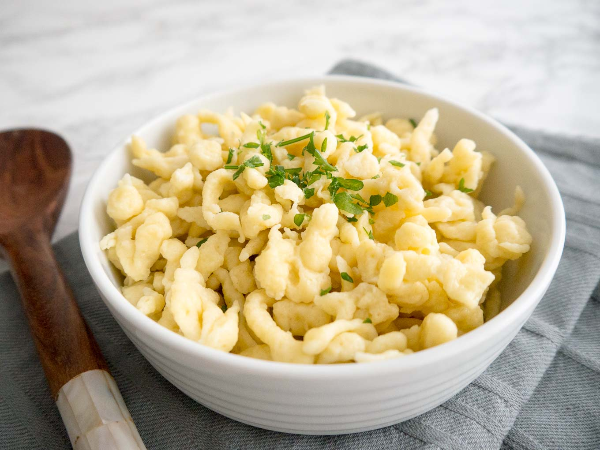
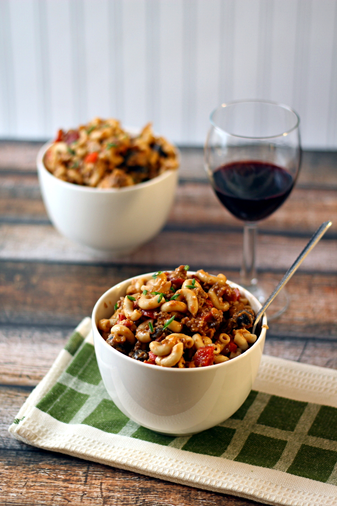
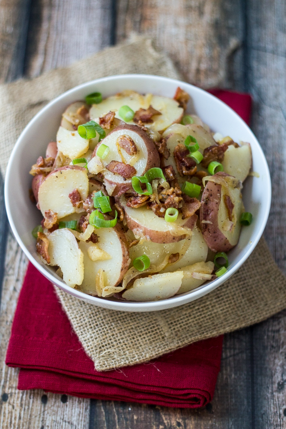
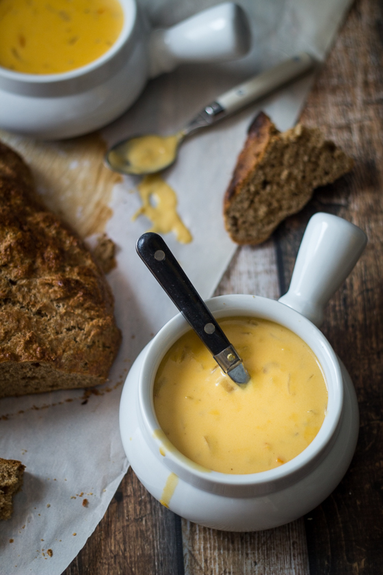

KRISTEN'S KITCHEN

Ingredients
- 4 eggs
- 1/3 cup milk
- 2 teaspoons salt
- 2 cups all-purpose flour
- 4 Tablespoons unsalted butter
- 1 teaspoon white pepper
- 1/4 teaspoon nutmeg
Instructions
- In a medium bowl, whisk together the eggs, milk, and salt. Add in the flour and stir until well combined.
- Bring a large pot of salted water to a boil over high heat. Place your spaetzle maker over the top, then pour half of the batter into the cup of the device. Quickly slide the cup back and forth to allow the batter to drop through. Repeat with second half of batter, working quickly, until all the batter is cooking in the pot.
- Set the spaetzle maker aside and give the dumplings a good stir in the pot. Let them cook for 1 to 2 minutes, until floating on the surface. Remove with a slotted spoon and place in a large bowl. Toss with butter and spices. Serve warm.
YOU'LL ALSO LOVE
German Goulash

Warm German Potato Salad

30 Minute German Beer Cheese Soup
